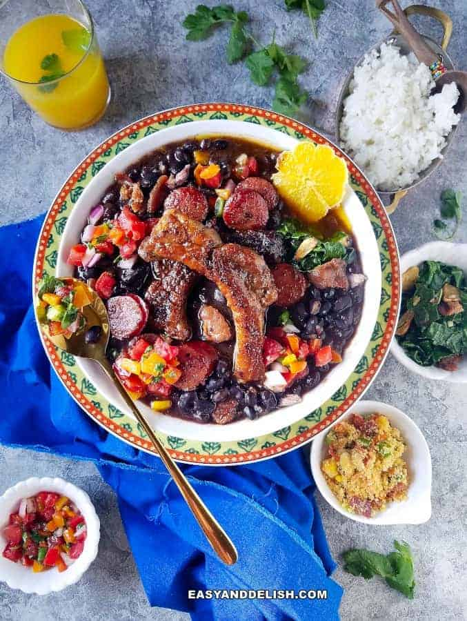
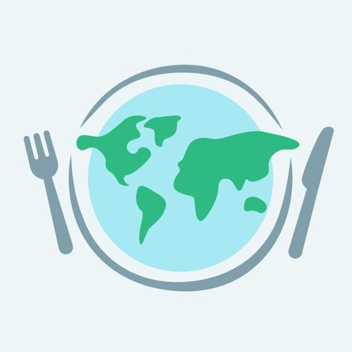
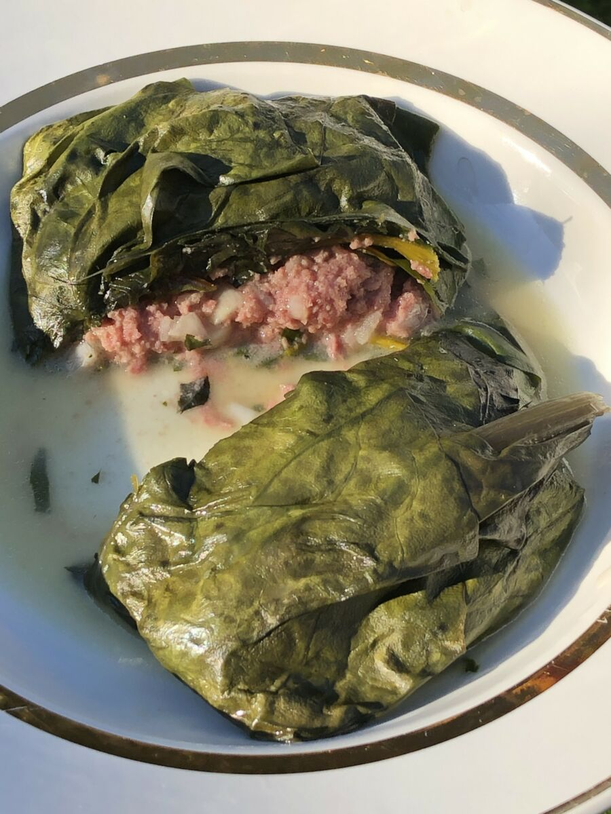
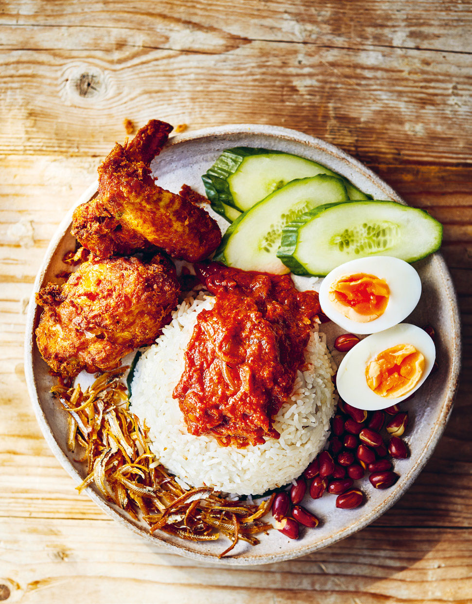
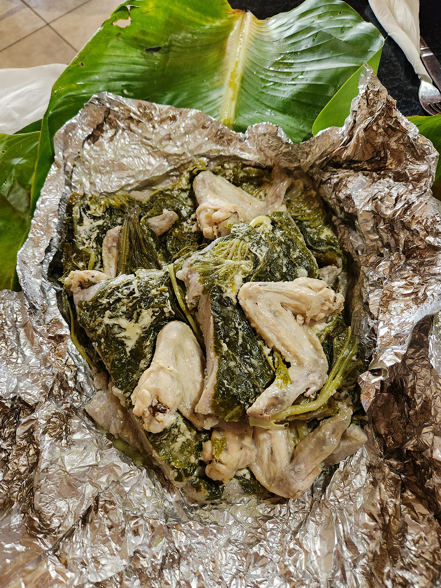

Feijoada
Feijoada is a hearty Brazilian stew made with black beans, pork, and beef, slow-cooked to tenderize the meat and develop a smoky, rich flavor that everybody would enjoy.


Feijoada is a hearty Brazilian stew made with black beans, pork, and beef, slow-cooked to tenderize the meat and develop a smoky, rich flavor that everybody would enjoy.

Palusami is a traditional Samoan dish made by wrapping coconut cream and sometimes onions or corned beef in taro leaves, then baking or steaming until tender.

Nasi Lemak is a Malaysian dish featuring rice cooked in coconut milk, served with sambal (chili paste), fried anchovies, peanuts, boiled eggs, and cucumber.

Biryani is a flavorful South Asian dish made by layering fragrant basmati rice with marinated meat, seafood, or vegetables, along with aromatic spices like saffron, cardamom, and cloves.

Laplap is a traditional dish from Vanuatu made by grating starchy root vegetables like yam, taro, or breadfruit, mixing coconut and milk, and baking the mixture in banana leaves.